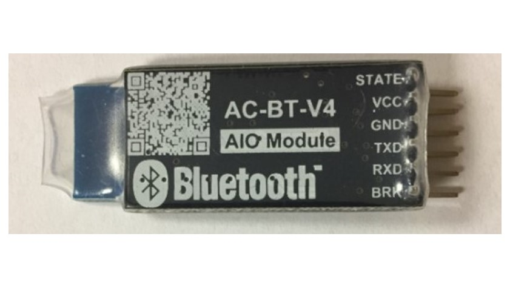

Hardware


Een Arduino (Uno) is een klein board met programmeerbare elektronica. Met een Arduino kan je verschillende elektrische componenten aansturen. Denk aan lampjes, schakelaars, motortjes en verschillende sensoren.
1. Via de USB A/B poort sluit je de Uno aan op de computer zodat je het board kan programmeren.
2. De Uno bevat een 9V DC Barrel Jack aansluiting waarmee je het board / project kan voorzien van stroom.
3. Als je geen externe voeding gebruikt voor je project kan je je componenten aansluiten op de 3,3V of 5V Power Pins.
4. De Uno heeft 6 Analoge Pins die elk 10 Bits resolutie bieden, ofwel 1024 verschillende waarden. De Pins kunnen worden gebruikt als input.
5. De ATmega328 is het belangrijkste onderdeel van de Uno. Deze microcontroller-chip zorgt ervoor dat de code wordt uitgevoerd als het board wordt opgestart.
6. De Digitale Pins op de Uno kunnen worden ingesteld als input of output. De eerste 6 Pins kunnen ook worden gebruikt als PWM (pulse with modulation) output.
HM-10 BLE Bluetooth 4.0 CC2541 draadloze module is een BLE-module voor een ingebed systeem om BLE draadloze communicatie te krijgen met BLE-compatibele apparaten (bijv. Android, iPhone en iPad).
Het is volledig configureerbaar door een uitgebreide en goed gedocumenteerde AT-opdrachtenset en maakt transparante datacommunicatie mogelijk via seriële UART (standaard baudrate 9600bps). De Bluetooth 4.0 HM-10 is eigenlijk een breakout-kaart voor cc2541, het brak de LED-pins, RX / TX uit en voegde ook de spanningsregelaar toe die regelmatig 5v tot 3,3 v was.
Pinbeschrijving van HM-10 BLE Bluetooth 4.0 CC2541 draadloze module:
STATE: state testpennen, verbonden met interne LED, over het algemeen niet verbonden.
BRK: verbreek verbinding, dit betekent dat de Bluetooth-verbinding wordt verbroken, in het algemeen verbroken.
VCC: positieve pool van de stroombron.
GND: Ground.
TXD: seriële interface, verzendende terminal.
RXD: seriële interface, ontvangende terminal.
H-Bruggen worden doorgaans gebruikt voor het regelen van de snelheid en richting van motoren, maar kunnen ook worden gebruikt voor andere projecten, zoals het aansturen van de helderheid van bepaalde verlichtingsprojecten, zoals krachtige LED-arrays.
Een H-brug is een circuit dat een stroom in beide polariteiten kan aansturen en kan worden bestuurd door *Pulse Width Modulation (PWM).
Pulsbreedtemodulatie is een middel om de duur van een elektronische puls te regelen. Probeer je in motoren de borstel voor te stellen als een waterrad en elektronen als de stromende waterdruppels. De spanning zou het water zijn dat met een constante snelheid over het wiel stroomt, hoe meer water, hoe hoger de spanning. Motoren zijn geschikt voor bepaalde spanningen en kunnen beschadigd raken als de spanning te zwaar wordt toegepast of als deze snel wordt verlaagd om de motor te vertragen. Dus PWM. Neem de analogie van het waterrad en denk aan het water dat het in pulsen raakt maar met een constante stroom. Hoe langer de pulsen, hoe sneller het wiel zal draaien, hoe korter de pulsen, hoe langzamer het waterrad zal draaien. Motoren gaan veel langer mee en zijn betrouwbaarder als ze worden aangestuurd via PWM.
Uit 1: Motor A-uitgang
Uit 2: Motor A-uitgang
Uit 3: Motor B-uitgang
Out 4: Mo (kan eigenlijk van 5v-35v zijn, alleen gemarkeerd als 12v)
GND: Ground
5v: 5v-ingang (onnodig als uw stroombron 7v-35v is, als de stroombron 7v-35v is, kan deze fungeren als een 5v-uitgang)
EnA: Schakelt PWM-signaal in voor motor A (zie de sectie "Arduino-schetsoverwegingen")
In1: Motor A inschakelen
In2: Motor A inschakelen
In3: Motor B . inschakelen
In4: Motor B . inschakelen
EnB: Schakelt PWM-signaal in voor Motor B (zie de sectie "Arduino-schetsoverwegingen")